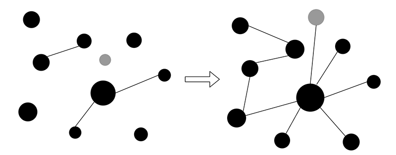
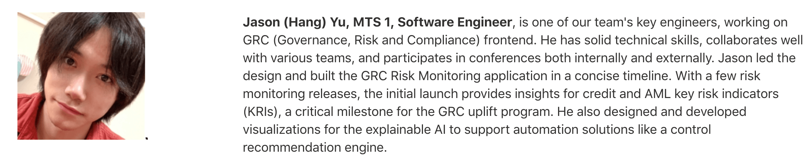

2020 年度总结（Jason Yu）
第一次写年度总结。今年由于疫情原因，工作和生活都有了不同程度的变化。工作上班不再需要出门挤地铁，生活起居可以完全做到足不出户。一下子，“弹性”这一词变得重要了起来。而“如何做到既能优先完成工作，又能高效利用琐碎时间？”便成了 2020 年我的一个重要主题。首先，简短总结一下这一年的产出：
- 读了 23 本书；
- 写了 80 篇博客；
- 做了 3 个小项目；
- 输出 7 场分享；
- 发布 3 篇 InfoQ 文章；
- 出了 1 门极客时间专栏；
- 去了 4 个城市；
- 获得 1 次晋升。
相应的，也有以下方面的不足：
- 缺乏运动；
- 碎片时间的利用率可以更高；
- 重在读书（理论），却忽略了编码（实践）；
- WFH 导致的“拖延症”（需要出门的事情一律拖到最后）；
- （等等）。
下面，从几个方面分别总结一下。
0. 学习
一直以来的一个观点是：“年轻的岁月不能被荒废”，当然每个人都有对“荒废”一词的不同理解。与我而言，在这个精力和脑力都还算 OK 的年纪，最应该做的事情就是不断地用新鲜知识丰富自己的见识，当然这里的知识不限于某个特定的领域。而突如其来的疫情也在无形之中为我创建了这样一个可以用来持续专注学习的条件。
2020 年的学习方向主要以“计算机底层系统”为主，为了能够深入了解 Wasm / WASI 标准的设计原则，这一年的阅读涵盖了从 X86 汇编、C/C++ 到操作系统原理、计算机体系结构、底层系统库组成等多个方面的内容。除此之外，为了完成“旧书清理”计划，也同时读了一些其他领域的书籍，比如：JavaScript、Git 及可计算理论等。
“读书的飞轮”一词可以理解为：对于某一个特定领域，当你所阅读的关于该领域的书籍越来越多时，你能够从每一本书中获得的新知识实际上可能会越来越少，因此阅读整本书所花费的时间也越来越短。而在阅读过程中，这些书籍中的“旧知识”反过来又会刺激你大脑中先前已经构建好的神经元，从而让你对整个该领域知识体系的理解变得更加深刻和牢固。这种感觉在我过去一整年的读书过程中有着深刻的体会。当然，这个概念也可以被引申到其他领域中。总结起来，我想“万事开头难”应该就是这个道理吧。“书籍”作为某个特定领域知识内容的集合，它提供了通常网络碎片化知识所不能提供的“面”，但组成这个面的众多“点”却可能并不那么“浑厚”，这意味着对于某个细分领域的垂直深入，仍需要借助互联网的帮助，从诸如博客、论文等相对碎片化的知识载体中汲取。但无论如何，在已构建的“面”的基础上来加深“点”，让这其中的各个点互通有无，才是一种更好的方式。

除了“读书的飞轮，”“新技术焦虑”也是我在过去一年读书学习过程中的一个重要感受。可能是由于从毕业到现在，本职工作大部分时间都关注在 Web 前端领域的原因。毫不夸张，Web 前端技术的发展速度可以用“日新月异”来形容，所以也才有了流传至今的那个“老子学不动了！”的段子。而由于去年的一年我都脱离了这个领域的“前线”，导致在年末的时候曾一度产生了“学了一年还是啥也不会”的错觉。通常，我会将学到的知识分为 fact 和 form 两类（名字随便起的，不重要）。其中，前者主要是指那些基本不会发生变化的，已经十分成熟且成为事实标准的方法、理论及解决方案。而后者则是指前者在一些特定场景下的变形和特殊应用方式。反观 Web 前端领域，你会发现其实大多数所谓的“新技术”则都是以 “form” 的方式呈现的。引用《现代操作系统》书中的一句话，“在计算机的历史中，每个新物种，无论是硬件还是软件，似乎都要经过它们前辈的发展阶段”。回过头再来看，Web 技术的发展好似也正处在这个阶段。
一年的时间，不止是为了培养一个读书的习惯，也是为了能够正视和解决自己一直以来的一个问题 — “缺乏耐心”。从最早的每本书只翻前面 20 页，到后来能够完整读完一本 600+ 页的书籍，再到最后一整年读完十几本书，每本书都记录了笔记，甚至某些书还完整读了两遍。希望在这个过程中我收获的不仅是知识，还有一些对待人和事的态度。
最后，当我们没有办法在短时间内通过任何形式（包括投机）获得大量财富时，相比之下，读书所获取的新知识，可能会是相对更加宝贵，且能够受用一生的财富。
读完书目（17 本）
- 《病毒来袭 - 如何应对下一场流行病的暴发》；
- 《C++ Primer 中文版（第5版）》；
- 《Effective C++ 第3版》；
- 《Effective Modern C++》；
- 《深入理解 C++11：C++11 新特性解析与应用》；
- 《程序员的自我修养 — 链接、装载与库》；
- 《C++17 STL Cookbook》；
- 《Low-Level Programming》；
- 《Pro Git (Second Edition)》；
- 《现代 C++ 教程：高速上手 C++11/14/17/20》；
- 《深入理解计算机系统（第三版）》；
- 《JavaScript 高级程序设计（第四版）》；
- 《计算的本质：深入剖析程序和计算机》；
- 《正则指引（第二版）》；
- 《现代操作系统（第四版）》（前六章）；
- 《JavaScript 20年》；
- 《你不知道的 JavaScript（上）》。
未读完书目（4 本）
- 《Advanced Design and Implementation of VMs》：
读的英文版，如果是作为一本“论述 VM 基本组成结构”的书来读的话，其实是很不错的。只是对单独每一组成部分（比如 “Runtime Service Provider”、“JIT Engine” 等）的实现细节的介绍，并不是十分详细和深入，整个行文主要以 JVM 作为原型。后续可能按需阅读。 - 《X86/X64 体系探索及编程》：
算是 X86-CPU 设计的必读入门，讲述了 CPU 在 ISA 层面的基本组成结构，只读了前面几章。后续会当做“工具书”选择性阅读。 - 《JavaScript 语言精髓与编程实战（第三版）》：
书本身内容是不错的，只是行文稍微啰嗦。后续找机会读完。 - 《垃圾回收算法与实现》：
对基本 GC 策略的介绍很生动形象（日本人写的书一般都很生动形象，就还带插图的那种）。但最好配合代码实践，一边理解一边写 POC。后续找机会读完。
弃坑书目（2 本）
- 《虚拟机系统与进程的通用平台》：
中文版有很多地方翻译生硬，阅读体验较差，遂弃。 - 《计算机网络（第七版）》：
教科书之诟病可以说是在这本书里体现的淋漓尽致，看了前三章学了一堆名词却没找到讲述的重点和主线。整本书可以说是对“计算机网络”相关领域各种名词的整理和概述，丝毫没有任何阅读体验，弃之毫不可惜。相反，另一本被推荐的书是《计算机网络：自顶向下》，有机会看看。
博客（80 篇）
- 读书记录：42 篇；
- 其他杂记：38 篇。
代码（3 个项目）
- QuickForth（Forth Machine Prototype）（X86/64 汇编）；
一个基于 X86/64 汇编编写的 Forth 虚拟机。主要用来练手。 - TWVM (WebAssembly VM) 重写（C++）；
轻量级的 WebAssembly 虚拟机，一直想找时间重写，从年初拖到了年尾。 - DFA / NFA / DPDA / NPDA / DTM / REGEXP 实现（Ruby）；
一堆“各式各样”的 Automatons 和相关应用。练手项目。
1. 社区
去年由于疫情原因，导致原本计划的许多线下活动都没有成功举办，这其中包括 FCC 上海社区的线下技术沙龙、WebAssembly China Summit 等。然而，完全归咎于疫情也并不合适，这里也有我自身的一些原因，比如年度计划上的改变，导致大部分时间都专注在了其他事项上。当然，随着 2021 年疫苗的逐渐接种，社会运行逐渐常态化，今年的一个目标就是要将去年未完成的线下活动排上日程，或者尝试一些新的形式。
另一方面，去年一共参加了 7 场技术分享，其中 6 场作为分享嘉宾，1 场作为听众。首先，仍然十分感谢各大公司能够邀请我来分享 Wasm 相关的技术话题，虽然过去的一年中 Wasm 实际上并没有过多令人瞩目的进展，但每一次分享，即便话题内容都基本相同（原谅我的炒冷饭），如何能够让更多人知道这项技术，甚至可以去实践，已经成为了我去分享的一个重要动力。接触 Wasm 已有三年时间，作为一门备受关注的冷门技术，我还是仍然坚信 Wasm 能够成为未来 5 年内最有潜力的技术之一。当然，一门新技术的发展更离不开社区的全情投入，在过去的一年中，我也看到了很多优秀的小伙伴在不断地为 Wasm 生态添砖加瓦。新的一年，我们一起努力。
去年十月，一次偶然的机会，使我能够以 Member 的身份加入到 Ecma TC39 这个关于制定 ECMAScript 未来发展方向的标准化组织。十分感谢 Aki 当初同意并欢迎我加入 TC39。作为 TC39 的现任主席，她给我的印象和她的身份着实完全不符（笑），或者说并不是想象中的那般严肃，倒不如说是“一个妈（主席）带着一群傻儿子（成员）”的感觉。Anyway，在加入后的这半年的时间里，虽然也参加了若干次会议，但实际上并没有任何有意义的输出，这情景同我当年刚加入 PayPal 那会儿参加的各种会议如出一辙，如此之保守。如今，半年之期已过，龙王也该来了（狗头）。
分享（6 场分享，1 场听众）
- PayPal 内部技术分享 - 五月；
- LiveVideoStack 线上分享 - 八月；
- W3C 中文兴趣组线上分享 - 八月；
- 深圳 TLC 大会现场分享 - 九月；
- 声网 - 音视频实践专场线上分享 - 十月；
- QCon 上海参会 - 十二月；
- Rust Conf 大会现场分享 - 十二月。
文章（3 篇）
- 《从首届 WebAssembly Summit 看 Wasm 未来发展方向 — 安全性、性能和浏览器引擎》- 前端之巅 / InfoQ；
- 《Wasm 在物联网、云和多媒体领域发展现状（首届 WebAssembly Sumimit 解析下篇）》- 前端之巅 / InfoQ；
- 《解读 WebAssembly 的 2020：Web 以外的进展与计划》- 前端之巅 / InfoQ。
Ecma TC39
- 参加了两次 JSCIG 线上会议；
- 参加了三次 TC39 线上会议。
其他
发布了一门极客时间专栏《WebAssembly 入门课》；
2. 事业
创业
去年年初，由于自身原因退出了之前兼职的一个创业团队，在这将近一年的时间里学到了很多东西。至少深有体会的一点是，真正的创业过程与自己曾设想的“完美模型”完全不 match。理想中，团队的每个成员都会承担起不同的角色，彼此协作按部就班推进产品落地和发展，仿佛产品的成功也只是顺其自然的结果。但更多的现实情况是：产品的推进会受到时间和成本的约束、成员之间的协作也可能出现分歧，甚至都无法按时完成各自应该完成的任务。简而言之，实际上大部分的创业项目可能在真正落地，可以被推广到 C/B 端用户之前，其生命周期就已经结束了。创业需要热情，但抛开感性的成分之外，如何能够做到产品从 0 到 1 的这一步，可能是更具有挑战、且更加重要的部分。
PayPal
时不时会有这样的错觉，仿佛去年是 2019 年，而 2020 年还并未开始。毕竟谁在家工作一整年，也都会忘记原来办公室热闹的烟火气。是的，由于去年疫情的原因，公司上海 site 始终都没有能够全面开放，但为了平衡公司政策和团队工作需求，团队便开始了每周“家里工作四天，公司工作一天”的特殊工作模式。而这样的工作节奏，可能还会继续持续到今年的九月。
2020 年公司在业务发展上有了更多不同的尝试，比如：成为了第一家获准在国内进行支付业务的，100% 控股的第三方外资支付机构；重金投入数字货币支付领域，支持基于 PayPal 的数字货币交易等。不仅如此，在如今疫情全球化的背景下，西方民众也逐渐减少了实体货币的使用，进而转向基于 PayPal 的网络支付服务。这一系列的变化和举措使得 PayPal 在去年的 Q4 财报中收获了“全球 3.77 亿活跃账户”，以及“超 3500 亿美金市值”的优秀成绩。不仅如此，股价也从去年初的 120 美金，涨至年底的接近 300 美金。从表面上来看，我们取得了十分优异的成绩，但作为一名该公司的员工，深知其实还有很多路要走。

在写这篇总结时，是我在 PayPal 的第 20 个月。感谢团队中每一个伙伴的认可，一次晋升代表着将要承担更多的责任，新的一年仍要一起努力。感叹一句，团队的同事人都太 nice，一个横跨三个国家、四个城市（纽约、圣何塞、上海、班加罗尔）的国际化团队，能够克服时差，彼此协作最终完成目标所依靠的不仅仅是个人能力，而更多的是包容（虽然玩英语版你画我猜时，我一个都没猜中过）。
3. 生活
WLB（work-life-balance）绝对不能少了其中的 life。但实际上，由于疫情，去年 90% 以上的时间都是在家中渡过的。没玩什么游戏、没刷什么短视频，动漫追了几部。
六月的时候和“大盖子”去了她的老家 — 贵阳，从此就爱上了贵阳的辣子，一发不可收拾。十一的时候又去了西安，顶着节假日人流量的旅游体验果不其然。但这都不重要，重要的是和谁去。之前一直计划着能带她去日本玩一圈，今年看看疫情的状况。
落灰的琴盖直到年底才被掀开，又一波枯燥的练习即将开始彩排。有一段时间在思考什么才是“有效的练习”，能够让我即使每天只练习半小时，但半年或一年下来也能够有一个明显的进步和成长。后来发现，大部分无效练习的根源还是在于“没有耐心，不够细心”，导致我的每一次练习都会无形中脱离曲子原有的节奏，而过渡关注演绎的速度，进而导致曲目的表现细节完全丢失。后来，我开始尝试逐节地慢速练习，才发现原先遇到的问题都可以被轻松地一一解决。回想起来，很多事情都是一样的，读书的飞轮无法在一开始就达到 120 迈，过于关注表象可能会深陷其中，无法看到事情的本质，这对人或对物来说，都是一样。
健康上一整年的作息都还相对稳定，相较于刚毕业那会儿经常不吃早餐，现在每天早上醒来的第一件事就是点个早饭… 然后再继续睡。晚上睡觉的时间大都在 12 点左右，相比上学那会儿 11 点半睡觉都嫌晚，新的一年要控制一下了。其他的，为了创造一个更加完善的家庭工作环境，也特意添置了显示器、升降桌，以最大化生产力，同时也能保障身体的需求。
财务上得益于公司股票的疯涨，今年的总体收益还算不错。对于一个无暇倒腾美股期货的人来说，也就买买货币基金仅此而已了。
旅行
- 北京；
- 深圳；
- 西安；
- 贵阳。
总结
总的来说，2020 年是按部就班的一年，这一年收获了很多知识、想通了很多道理、多了很多计划。新的一年，继续努力吧。
评论 | Comments